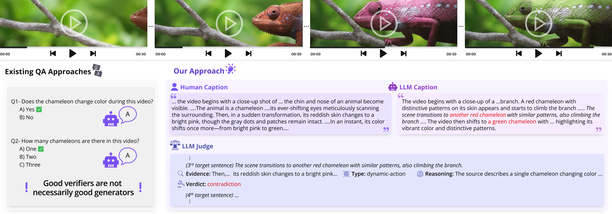

We present ARGUS, a novel framework to measure hallucinations (ArgusCost-H; lower-better) and omissions (ArgusCost-O; lower-better) in free-form video caption generation.

Current evaluation strategies rely on a question-answering (QA) paradigm. We allow the model to generate a free-form caption first and then quantify it's degree of hallucinations and omissions.